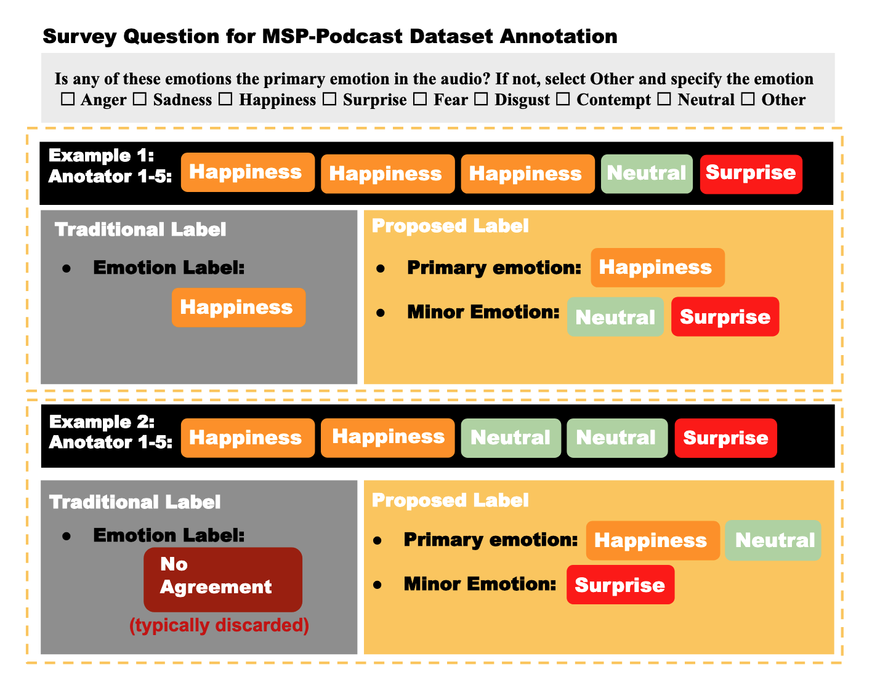
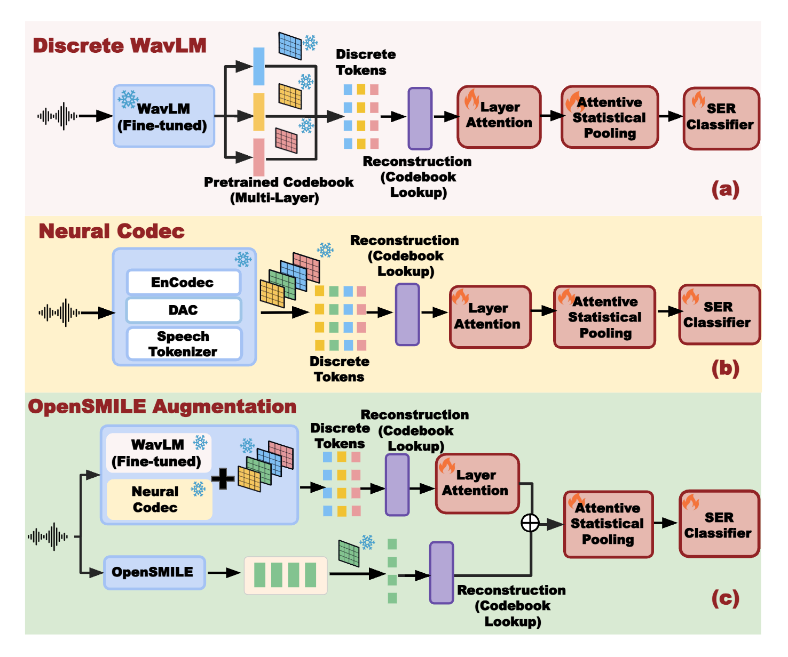
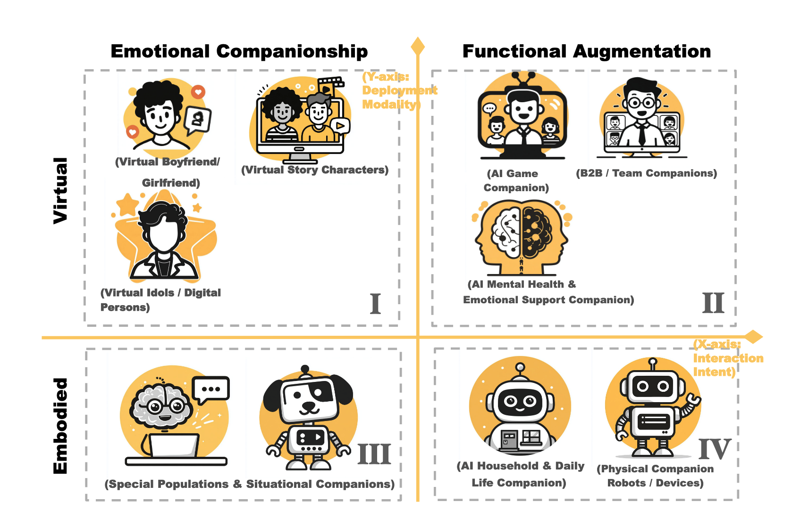
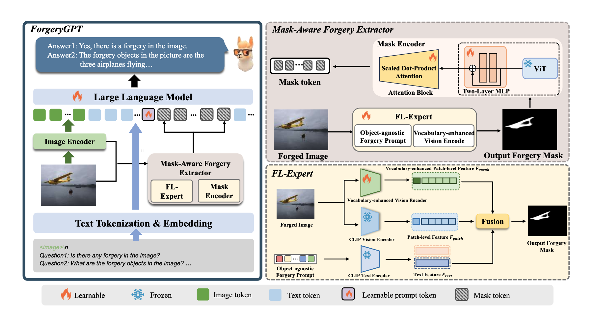
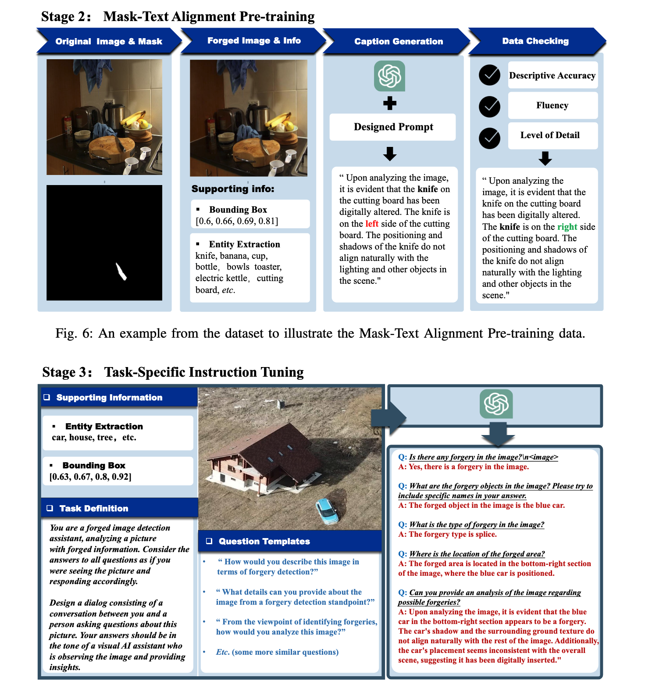
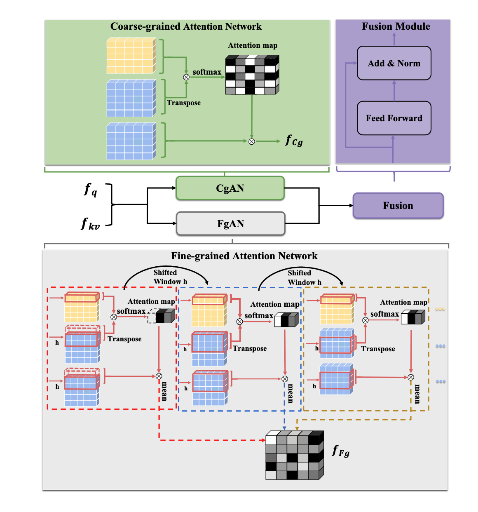

Learning from Minority Perception: Improving Explainable SER via Rationale Fine-tuning
First Author
Hierarchical Emotion Modeling · Cross-Model Distillation · Explainable SER
Key Points: TBD
Learning from Minority Perception: Improving Explainable SER via Rationale Fine-tuning
First Author
Hierarchical Emotion Modeling · Cross-Model Distillation · Explainable SER
Key Points: TBD


ADEPT: RL-Aligned Agentic Decoding of Emotion via Evidence Probing Tools — From Consensus Learning to Ambiguity-Driven Emotion Reasoning
First Author | 🔗 Paper
Agentic LLM reasoning · Tool-augmented inference · RL alignment (GRPO)
TL;DR: Proposes ADEPT, a pioneering agentic framework that transforms Speech Emotion Recognition (SER) from a static classification task into an active, evidence-grounded reasoning process using RL-aligned MLLMs. Crucially, ADEPT enables a paradigm shift from consensus learning to ambiguity-driven emotion reasoning.
Key Points:
This work explores how agentic multimodal models can move beyond pattern recognition toward verifiable, evidence-grounded reasoning under perceptual ambiguity.

Recovering Performance in Speech Emotion Recognition from Discrete Tokens via Multi-Layer Fusion and Paralinguistic Feature Integration
First Author | 🔗 Paper
Discrete Audio Tokenization · Multi-layer Attention Fusion · SSL · Neural Codecs
TL;DR: Introduces a multi-layer fusion framework to recover the significant performance loss in Speech Emotion Recognition (SER) caused by audio discretization, enabling semantic-rich discrete tokens to rival high-fidelity continuous features.
Key Points:
This work establishes semantic-rich discrete speech tokens as a viable alternative to continuous acoustic features for affective computing, bridging representation learning and downstream emotion reasoning under aggressive compression constraints.


Systematizing LLM Persona Design: A Four-Quadrant Technical Taxonomy for AI Companion Applications
First Author | 🔗 Paper
AI Companionship · Embodied Intelligence · Technical Taxonomy
TL;DR: Systematizes the fragmented landscape of AI persona design by introducing a novel four-quadrant technical taxonomy that maps companion applications from virtual agents to embodied systems, providing actionable design guidelines for researchers and practitioners.
Key Points:
This work provides a unifying systems-level lens for LLM persona agents, enabling principled design and evaluation of AI companions across virtual, multimodal, and embodied interaction settings.


ForgeryGPT: Multimodal Large Language Model for Explainable Image Forgery Detection and Localization
Co-author | 🔗 Paper
Fine-grained forgery localization · Vision–language reasoning · Multimodal LLM grounding
TL;DR: Leverages Multimodal LLMs to pioneer an explainable image forgery detection and localization system that generates natural language rationales for identified visual manipulations.
Key Points:


ECENet: Explainable and Context-Enhanced Network for Multimodal Fact Verification
Co-author | 🔗 Paper
Dual-granularity Attention · Cross-modal Alignment · Hierarchical Reasoning
TL;DR: Introduces a state-of-the-art multimodal fact verification framework that utilizes dual-granularity attention and hierarchical reasoning to generate evidence-based justifications for news veracity.
Key Points:

Unimodal Feature-Enhanced and Cross-Modal Correlation Learning for Multimodal Fact Verification
Co-author | 🔗 Paper
Multimodal feature engineering · Cross-modal correlation learning